Hanyang University / Texas A&M University2026#004학습·RL·IL·VLA학술논문
강화학습 기반 굴착 작업 적응형 3D 시뮬레이션 및 시각화
Reinforcement Learning-driven Adaptive 3D Simulation and Visualization of Excavator Operations
ChungBae Yoon, Youngjib Ham, SangUk Han · Automation in Construction 181 (2026) 106626
한줄 요약 — 과거 작업시간 표를 입력하는 기존 공정 시뮬레이션 대신, 4자유도 굴착기와 가상센서를 갖춘 PPO 에이전트가 현장 점군·장비 회전속도에 맞춰 복귀-굴착-스윙-덤핑 경로와 주기시간을 스스로 생성하도록 해 3D 검증가능성과 현장 적응성을 함께 높이고 관리자가 동작과 시간의 타당성을 확인하게 한 연구다.
1.연구 배경 및 동기
과거 평균값이 아닌 현재 현장에서 주기시간과 동작을 함께 생성하기
토공은 굴착기·덤프트럭·도저의 수량과 조합이 생산성을 좌우하고 공사비의 25~30%를 차지할 수 있다. 장비군 배분에는 굴착기 적재시간과 트럭 운반시간 같은 사이클 시간이 필요하지만, 현장 실무는 제조사 표, RS Means류 표준자료, 과거 현장기록과 관리자의 경험에 의존한다. 이런 값은 트럭과 굴착기의 상대 위치, 스윙각, 굴착깊이, 지형과 장애물이 달라지면 현재 작업을 대표하지 못해 장비 대기와 비용 초과를 일으킬 수 있다.
이산사건 시뮬레이션은 여러 장비 조합을 가상 비교할 수 있지만 입력 사이클 시간이 부정확하면 결과도 신뢰할 수 없다. 또한 결과가 숫자와 통계로만 제시되면 관리자가 모델의 작업논리와 움직임이 실제 가능한지 검증하기 어렵다. 기존 굴착 궤적 연구는 굴착 단계의 2차원 버킷 경로나 규칙 기반 전체 사이클에 집중했고, 네 회전관절이 동시에 만드는 3차원 복귀·굴착·스윙·덤핑과 현장 공간정보를 함께 반영한 주기시간 생성은 부족했다.
논문은 과거 궤적을 지도학습하는 대신 실제 굴착기의 기계 사양을 가진 3D 에이전트를 가상 현장에서 시행착오로 학습시킨다. 합성환경에서 기본 4자유도 동작을 사전학습하고, 다섯 실제 현장의 점군 지형·장비 배치·회전속도로 미세조정한다. 학습된 정책이 만든 동작을 3D로 보여주고 그 실행시간을 사이클 입력으로 사용함으로써, 시간 추정과 경로 타당성의 시각적 검증을 같은 모델에서 해결하려 한다.
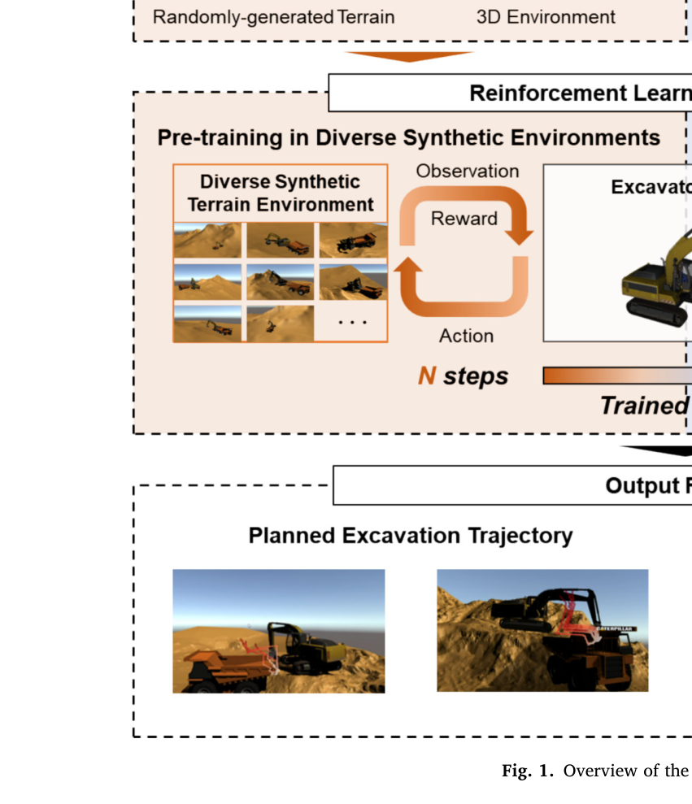
원문 Figure 1 · PDF p.4 — Fig. 1. Overview of the research methodology.
선행 연구의 한계
제조사 성능표와 표준 생산성 자료는 현장별 스윙각, 굴착깊이, 지형과 장애물 차이를 단순화한다.
과거자료 기반 회귀·신경망은 예측 대상과 유사한 조건의 대규모 현장 기록을 필요로 한다.
기존 공정 시뮬레이션의 수치 출력만으로는 장비 움직임과 작업논리의 물리적 타당성을 직관적으로 검증하기 어렵다.
굴착 경로 연구 다수는 digging 단계의 2차원 버킷 경로에 한정돼 전체 4자유도 사이클을 다루지 않는다.
규칙 기반 3차원 경로는 새로운 지형·장애물에 적응하려면 외부 경로계획 규칙을 다시 만들어야 한다.
이 연구의 기여
실제 장비의 4자유도 관절, 작동범위, 스케일과 회전속도를 반영한 1:1 굴착기·트럭 3D 모델을 구성했다.
장비 자세, 트럭·굴착점 관계, 지형·충돌을 관측하는 가상센서와 458차원 관측 입력을 설계했다.
다섯 현장의 514개 실측 사이클과 제조사·표준자료를 비교해 주기시간 추정 성능을 검증했다.
광류와 DTW, 숙련자 패널로 생성 경로의 공간적·정성적 현실성을 평가하고 돌발 장애물 적응 시험을 추가했다.
2.방법론 및 시스템 구성
3D 굴착기는 body, boom, arm, bucket 네 구성요소와 center, body-boom, boom-arm, arm-bucket 네 회전축을 가진다. 길이 영향 예비시험에서 현장 장비별 붐·암 길이 변화가 주기시간에 준 최대 영향은 3.35%였지만, 스윙속도 40% 증가는 주기시간을 19.60%, 80% 증가는 29.16% 줄였다. 이에 구성요소 길이는 표준 비율로 두고 현장별 몸체 RPM과 공통 붐·암·버킷 RPM을 핵심 입력으로 채택했다. 모델은 실제 크기 1:1, 붐:암:버킷 길이비 1.00:0.44:0.28로 구성했다.
학습은 무작위 지형·장비·트럭 배치의 14개 합성환경에서 기본 동작을 사전학습한 뒤, 레이저스캐너 또는 드론 영상에서 만든 실제 현장 점군을 필터링·보간해 메시로 바꾼 다섯 환경에서 미세조정한다. PPO 정책은 매 8 ms마다 몸체·붐·암·버킷의 회전방향과 -1~1 크기의 4차원 연속 행동을 낸다. 복귀를 먼저 학습하고 전체 네 단계를 이어 학습하며, 시간절약·토사 유지·정렬·상승·덤핑 보상과 잘못된 자세·지면관통·역방향 회전·충돌 페널티를 조합한다.
처리 파이프라인
1
장비 기계속성 선별
붐·암 길이와 스윙 RPM이 주기시간에 미치는 영향을 예비 시뮬레이션으로 비교해, 길이는 표준화하고 현장별 회전속도를 모델 입력으로 유지한다.
2
1:1 굴착기·트럭 모델링
실제 작동범위와 네 회전관절을 가진 굴착기 및 덤핑 목표인 트럭을 Unity 3D 공간에 배치한다.
3
가상센서와 관측 구성
굴착기 중심·버킷·트럭·굴착점 벡터, 상대각·거리, 관절 위치·회전각과 12세트 9채널 거리센서에서 총 458개 관측값을 정책에 제공한다.
4
합성환경 사전학습
지형 크기·높이, 굴착점, 트럭 위치와 360도 스윙각을 무작위화한 14개 환경에서 먼저 복귀 동작, 이어 복귀-굴착-스윙-덤핑 전체 사이클을 학습한다.
5
현장별 환경 재구성
레이저스캐너 또는 드론으로 얻은 점군에서 비지형점과 이상치를 제거하고 메시를 만든 뒤 실제 굴착기·트럭·굴착 위치를 배치한다.
6
PPO 미세조정
현장별 몸체 RPM, 작동범위와 지형을 적용하고 사전학습 정책을 약 5천만 단계씩 미세조정해 현장 조건에 적응시킨다.
7
주기시간 비교
다섯 현장 514사이클 실측값, Caterpillar 성능표 또는 한국 표준 생산성 자료, RL 시뮬레이션 추정값을 전체·스윙각·굴착깊이별로 비교한다.
8
경로·적응성 검증
실제·가상 영상에서 arm-bucket 관절을 광류로 추적하고 DTW로 site-site, sim-sim, site-sim 경로거리를 비교한다. 전문가 패널과 이동 작업자·이동 토사 장애물 보조실험으로 정성 타당성과 온라인 반응을 확인한다.
원문 Figure 1 · PDF p.5 — Fig. 1 provides an overview of the research methodology. It involves the following steps: (1) 3D models of construction equipment such as excavator and truck are designed based on the specifications of the actual equipment, including the mechanical properties (e.g., operating ranges and angular velocities of the body, boom, arm, bucket). In this process, the virtual sensors are positioned strategically to better perceive the agent's current state and measure the rewards in the learning pro cess. (2) After integrating the 3D models, the RL environments are designed. In particular, two types of environments in which the agents are trained are implemented: synthetic environments generated with arbitrary terrains for pre-training, and site-specified environments created based on actual site data for fine-tuning. (3) To train an exca vator agent, an RL strategy that can properly deal with a continuous action space is designed in conjunction with the modeling of the observation and reward functions. In particular, the observation update cycle to the agent and ranges of policy updates are tested and set to ensure the collection of significant observations for each update. The observation vector is determined to facilitate the effective conveyance of spatial information to the agent. The reward functions are constructed as the criterion for the agent to learn how to excavate, given the observed state. With the trained agent, the performance is assessed in terms of the accuracy of the cycle time estimation and similarity of the planned paths compared with those of human operators.
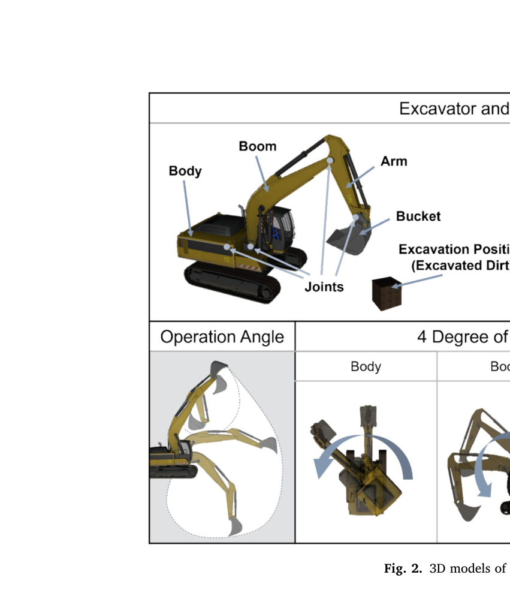
원문 Figure 2 · PDF p.5 — Fig. 2. 3D models of excavator and truck.
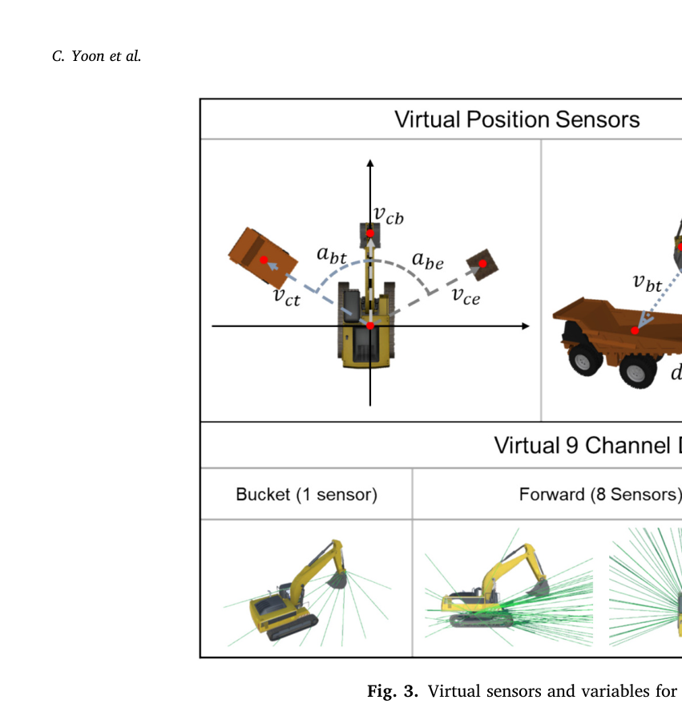
원문 Figure 3 · PDF p.7 — Fig. 3. Virtual sensors and variables for reward function and observation of RL.
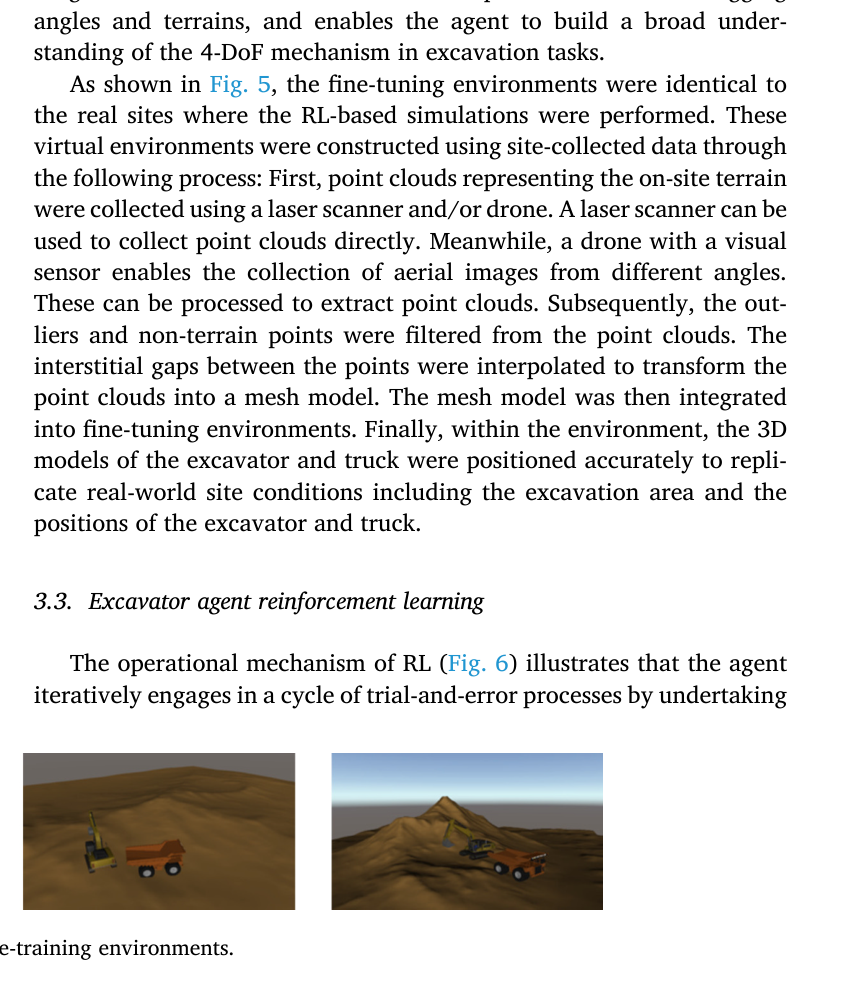
원문 Figure 4 · PDF p.7 — Fig. 4. Examples of pre-training environments.
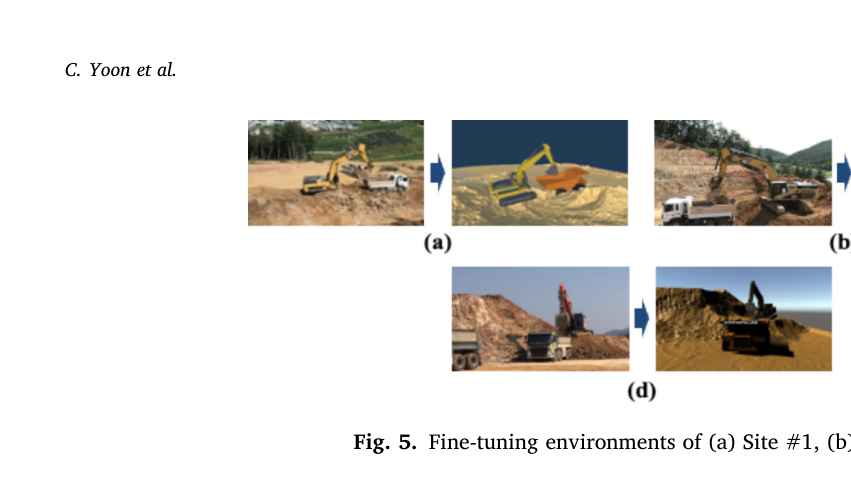
원문 Figure 5 · PDF p.8 — Fig. 5. Fine-tuning environments of (a) Site #1, (b) Site #2, (c) Site #3, (d) Site #4, and (e) Site #5.
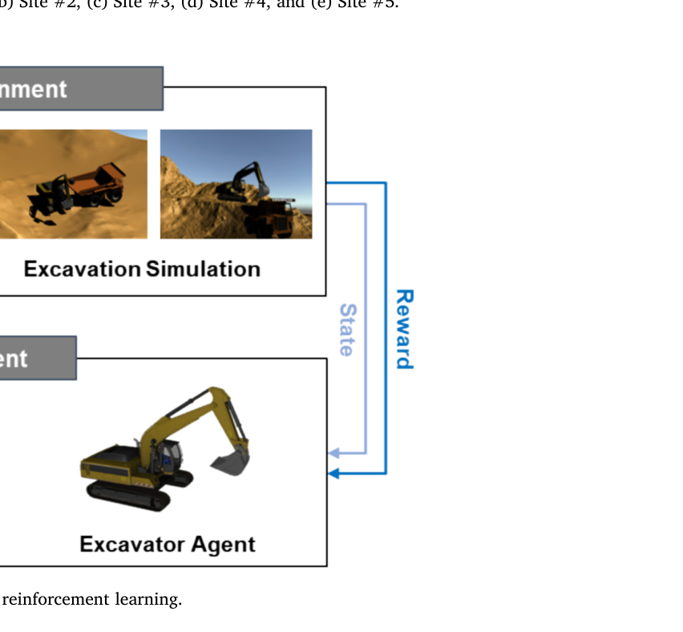
원문 Figure 6 · PDF p.8 — Fig. 6. Mechanism of reinforcement learning.
3.핵심 기술
기계 제약을 포함한 4자유도 3D 에이전트
단순한 버킷 점 궤적이 아니라 몸체·붐·암·버킷의 동시 회전을 정책 행동으로 삼는다. 각 구성요소의 작동범위와 RPM이 실제와 유사한 시간척도를 만들며, 네 관절의 누적 운동이 버킷의 3차원 경로와 사이클 시간을 결정한다. 길이보다 회전속도의 영향이 크다는 예비시험을 통해 필요한 장비 입력을 줄인 것이 실무 적용성을 위한 설계 선택이다.
정책 출력은 네 구성요소의 회전방향과 상대속도를 나타내는 연속 4차원 벡터다.
몸체 RPM은 현장 장비별로 3.60, 2.05, 2.28 rpm을 적용했고 붐·암 1.55 rpm, 버킷 2.58 rpm은 공통 적용했다.
RPM은 토크·감쇠·유압제약의 누적 결과를 간접 표현하지만 개별 동역학 자체를 모델링하지는 않는다.
458차원 가상센서 관측과 공간적 상황인식
관측은 트럭·버킷·굴착점의 위치와 방향, 버킷-트럭·버킷-굴착점 상대각, 거리, 관절 위치와 회전각을 포함한다. 12세트의 9채널 거리센서는 충돌 여부, 충돌점 거리, 대상 종류와 이름을 제공해 총 432개 값을 만들고, 전체 관측은 458개다. 센서는 전방 8개, 후방 3개, 버킷 1개로 배치된다.
이 구성은 지형과 장애물을 정책에 직접 넣어 규칙 기반 외부 경로계획 없이도 작업조건에 따라 동작을 바꾸려는 시도다. 다만 전방 중심 배치는 큰 스윙각과 급경사 뒤쪽 굴착점 인식을 늦춰 특정 현장의 주기시간을 과대예측하는 원인이 됐다.
공간정보와 장비 내부 자세를 한 정책 입력으로 결합한다.
센서 수를 늘리면 사각을 줄이지만 입력차원과 학습 난도가 증가한다.
가상센서 배치 자체가 시뮬레이션 정확도와 실패 형태를 결정하는 설계변수다.
복귀 우선 커리큘럼과 보상 설계
복귀 단계는 트럭 방향에서 굴착점으로 몸체·붐·암·버킷을 동시에 조정하는 복잡하고 독립적인 동작이므로 먼저 1500스텝, 즉 12초 time horizon으로 학습한다. 이후 전체 네 단계는 5500스텝, 44초 horizon으로 학습한다. 이는 일반적인 복귀 3~5초와 전체 사이클 15~25초보다 2~4배 긴 관측창으로 충분한 시행착오를 제공한다.
보상은 12개 연속항과 10개 이산항으로 구성된다. 토사를 버킷 안에 유지하고, 트럭·굴착점 방향을 맞추고, 버킷을 적절히 들어 올리고, 성공적으로 접촉·덤핑하면 보상한다. 잘못된 버킷 자세, 토사 유실, 지면 관통, 반대 회전, 장비·트럭 충돌과 긴 시간에는 벌점을 준다. 큰 처벌만 주면 에이전트가 움직이지 않는 보수적 정책이 될 수 있어 성공 보상을 강조한 carrot-over-stick 전략을 쓴다.
토사를 흘리면 엄격한 고정 순서를 따르지 않고 다시 굴착할 수 있다.
PPO clipping은 보상에 반응한 급격한 붐·버킷 정책 변화와 토사 유실을 억제한다.
명시적 경로 규칙 대신 전체 에피소드 누적보상으로 동작 순서를 학습한다.
합성 사전학습과 현장 점군 미세조정
사전학습 환경은 지형 스케일과 높이, 트럭·굴착기 위치, 굴착점을 무작위화하고 전체 360도 스윙을 경험하게 한다. 현장별 환경은 점군에서 지형 메시를 만들고 장비·트럭을 실제 상대 위치에 배치한다. 이렇게 기본 4자유도 조작지식을 공유하고 약 5천만 스텝의 현장별 미세조정으로 지형과 RPM 차이에 적응한다.
장비 회전속도가 사전학습과 크게 다른 Site 3~5는 초기 보상이 낮고 학습시간이 늘었다. 이는 전이학습이 유효하면서도 정책이 기계속성 변화에 민감함을 보여준다. 현장별 fine-tuning을 줄이려면 다양한 동역학과 장비 치수를 사전학습에서 무작위화해야 한다.
사전학습 14개 합성환경 약 7억 스텝, 현장별 미세조정 약 5천만 스텝을 사용했다.
실제 지형은 레이저스캔 또는 드론 사진 측량 점군을 메시로 변환한다.
고정된 토사·장비 치수 가정은 복잡 현장 일반화를 제한한다.
4.실험 결과
실험 환경·장비·데이터
검증 현장은 5곳이며 Site 1·2는 Caterpillar 345C, Site 3은 Hyundai HX380, Site 4는 Doosan DX300LC, Site 5는 Hyundai HX300을 사용했다.
현장별 점군으로 지형 메시를 만들고 실제 장비·트럭·굴착 위치를 3D 미세조정 환경에 재현했다.
실측 사이클은 Site 1 42회, Site 2 44회, Site 3 177회, Site 4 89회, Site 5 162회로 총 514회다.
사전학습은 14개 합성환경에서 약 7억 스텝, 다섯 현장 미세조정은 각 약 5천만 스텝을 사용했다. 따라서 현장별 정책 하나의 학습경로는 공유 사전학습을 포함해 약 7억5천만 스텝이고, 다섯 미세조정 실행량을 모두 합치면 약 9억5천만 스텝이다.
경로비교는 안전상 영상촬영이 가능한 Site 1~3에서 수행했고, 8명의 굴착 전문가 패널은 평균 19년 경력을 가졌다.
실험 프로토콜
복귀 단계 2억2천만 스텝을 먼저 학습하고 굴착·스윙·덤핑을 포함한 나머지 단계에 4억8천만 스텝을 사용했다.
현장별 장비 RPM과 지형을 적용해 미세조정한 뒤 무작위 표본의 평균 사이클 시간을 추정했다.
Site 1·2의 기존법은 Caterpillar Performance Handbook, Site 3~5는 한국 표준 생산성 자료를 사용했다.
스윙각은 30~60, 60~90, 90~120도로, 굴착깊이는 장비 지면 아래·지면·위의 세 그룹으로 나눠 오차를 분석했다.
실제와 시뮬레이션 영상에서 arm-bucket 관절의 시간별 2D 경로를 광류로 추출하고 DTW로 site-site, sim-sim, site-sim을 교차 비교했다.
이동 작업자와 이동·정지 토사를 가상 적재영역에 넣어 정지 또는 우회하는 온라인 적응성을 보조시험했다.
비교 기준
Caterpillar 제조사 성능표
한국 표준 생산성 자료
실제 현장 평균 사이클 시간
실제 작업자 경로 간 자연 변동 site-site
시뮬레이션 경로 간 변동 sim-sim
평가 지표
주기시간 추정 정확도와 초 단위 오차
스윙각·굴착깊이 그룹별 정확도
DTW 평균 경로거리와 site-sim/site-site 비
전문가의 동작 개연성 판정
학습 스텝·시간·누적보상
돌발 장애물 조건의 사이클시간 증가
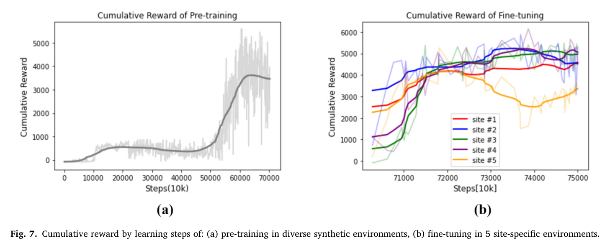
원문 Figure 7 · PDF p.12 — Fig. 7. Cumulative reward by learning steps of: (a) pre-training in diverse synthetic environments, (b) fine-tuning in 5 site-specific environments.
핵심 결과 해석
전체 514사이클에서 RL 시뮬레이션의 현장 평균 주기시간 정확도는 91.15%로 기존법 81.95%보다 높았다. 현장별 정확도는 83.06~97.40%였고 다섯 현장 모두 논문이 채택한 80% 허용기준을 넘었다. 스윙각 그룹 평균은 87.37%, Site 3의 굴착깊이 그룹 평균은 93.62%였다. 다만 후방 센서가 적고 버킷 센서가 급사면에서 위를 향하면서 Site 4의 90~120도 그룹은 10.35초 오차와 51.39% 정확도로 크게 악화됐다. 이는 현장 조건을 반영한 정책도 관측설계의 사각에는 취약함을 보여준다.
경로 검증에서 site-sim DTW 거리는 site-site 자연변동의 평균 0.90배, 즉 10% 작았다. 전문가 8명 중 7명은 가상 굴착이 개연적이라고 했고 한 명은 초보 운전자 같다고 평가했다. 이동 장애물에는 멈추고 정지 장애물에는 우회했으나 안전동작 때문에 사이클이 42~43% 늘었다. 이 연구의 가치는 시간 오차뿐 아니라 어떤 4자유도 동작으로 그 시간이 나왔는지를 3D로 검토할 수 있다는 데 있다. 반면 실제 토사를 고체 블록으로 표현하고 관성·토크·감쇠를 RPM으로 축약했으므로, 결과는 실차 폐루프 제어기가 아니라 공정계획용 적응형 동작·시간 생성기로 해석해야 한다.
정량 결과
평가 항목
정량 결과
조건·맥락
원문 근거
현장 검증 사이클
514회
다섯 현장 42+44+177+89+162회
PDF p.11
평균 주기시간 추정 정확도
91.15%
RL 시뮬레이션의 다섯 현장 평균
PDF p.12
기존 방법 평균 정확도
81.95%
제조사 성능표 또는 한국 표준 생산성 자료
PDF p.11
현장별 RL 정확도
93.92%, 97.40%, 93.46%, 83.06%, 87.90%
Site 1~5 순서
PDF p.12
스윙각 그룹 평균 정확도
87.37%
30~60, 60~90, 90~120도 그룹의 다섯 현장 분석
PDF p.12
굴착깊이 그룹 평균 정확도
93.62%
Site 3의 지면 아래·지면·지면 위 세 그룹
PDF p.12
경로 DTW 비
0.90
site-sim 거리를 site-site 자연변동으로 나눈 전체 평균
PDF p.14
전문가 개연성 판정
7/8명
평균 경력 19년 패널 중 7명이 시뮬레이션 동작을 plausible로 평가
PDF p.13
학습 규모와 시간
정책별 7.5억 스텝, 전체 실행량 9.5억 스텝; 사전학습 81시간, 미세조정 평균 12시간
공유 사전학습 7억과 현장별 미세조정 5천만을 구분한 값; GPU 메모리 6.6 GB, 평균 RAM 1.6 GB 사용
PDF p.11
장애물 적응에 따른 사이클 증가
42~43%
이동 장애물 정지 및 정지 장애물 우회 보조시험
PDF p.14
실패 사례와 경계조건
Site 4·5의 큰 스윙각과 60도·45도 급사면에서 버킷 센서가 위를 향해 굴착점 인식이 늦어졌다.
Site 3의 작은 스윙각에서는 물리엔진이 실제 동역학을 완전히 재현하지 못해 주기시간을 과소예측했다.
Site 1 SA1과 Site 2 SA2에서는 site-sim 경로 차이가 실제 작업자 반복 간 자연변동보다 컸다.
전문가 한 명은 시뮬레이션 동작을 숙련자가 아닌 초보 운전자 수준으로 평가했다.
PPO 누적보상은 이론적 단조수렴을 보장하지 않고 Site 5는 종료 시점에도 보상이 변동·증가하고 있었다.
돌발 장애물 회피는 안전하지만 사이클 시간이 42~43% 늘어 생산성과 안전의 상충을 만들었다.
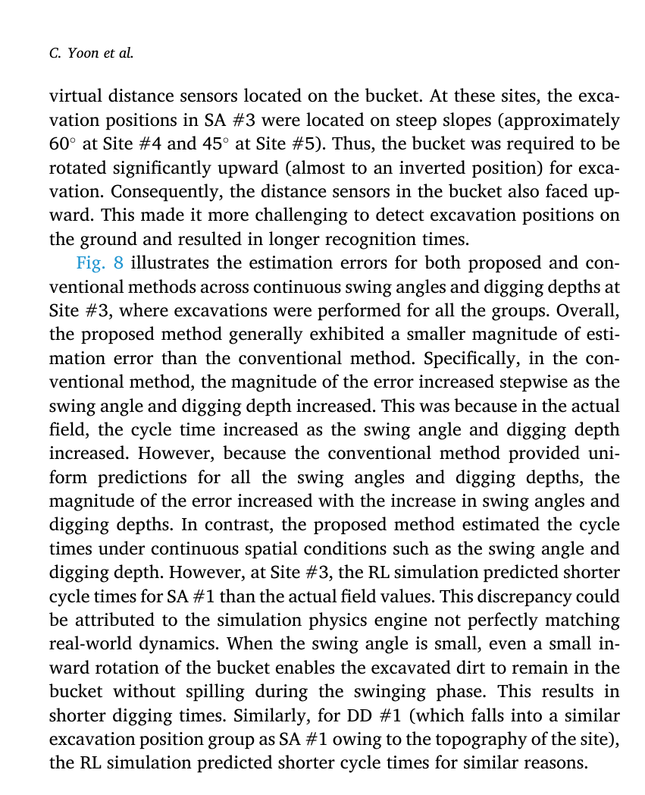
원문 Figure 8 · PDF p.13 — Fig. 8 illustrates the estimation errors for both proposed and con ventional methods across continuous swing angles and digging depths at Site #3, where excavations were performed for all the groups. Overall, the proposed method generally exhibited a smaller magnitude of esti mation error than the conventional method. Specifically, in the con ventional method, the magnitude of the error increased stepwise as the swing angle and digging depth increased. This was because in the actual field, the cycle time increased as the swing angle and digging depth increased. However, because the conventional method provided uni form predictions for all the swing angles and digging depths, the magnitude of the error increased with the increase in swing angles and digging depths. In contrast, the proposed method estimated the cycle times under continuous spatial conditions such as the swing angle and digging depth. However, at Site #3, the RL simulation predicted shorter cycle times for SA #1 than the actual field values. This discrepancy could be attributed to the simulation physics engine not perfectly matching real-world dynamics. When the swing angle is small, even a small in ward rotation of the bucket enables the excavated dirt to remain in the bucket without spilling during the swinging phase. This results in shorter digging times. Similarly, for DD #1 (which falls into a similar excavation position group as SA #1 owing to the topography of the site), the RL simulation predicted shorter cycle times for similar reasons.
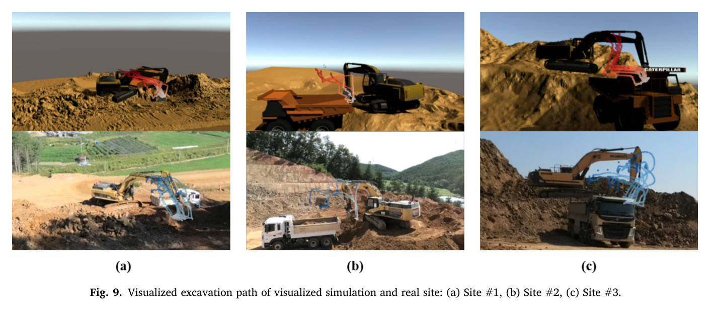
원문 Figure 9 · PDF p.14 — Fig. 9. Visualized excavation path of visualized simulation and real site: (a) Site #1, (b) Site #2, (c) Site #3.
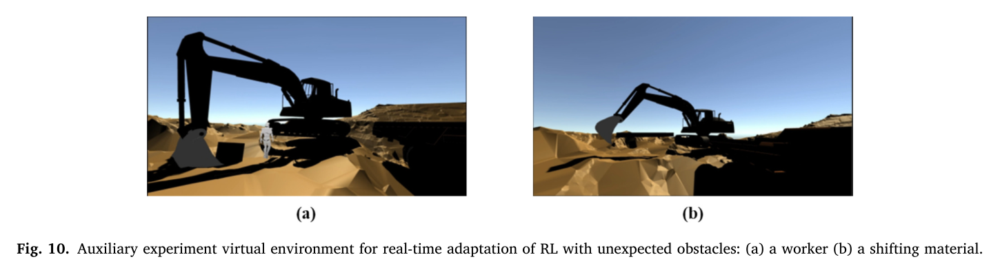
원문 Figure 10 · PDF p.15 — Fig. 10. Auxiliary experiment virtual environment for real-time adaptation of RL with unexpected obstacles: (a) a worker (b) a shifting material.
5.한계 및 향후 연구
현재 한계
굴착 토사를 입자가 아닌 고체 블록으로 모델링하고 건조단위중량·팽창계수·저항을 현장 간 동일하게 가정했다.
합성환경은 발파·천공 뒤의 중간 복잡도 지형을 가정해 극단적 암괴, 진흙, 붕괴 토사와 혼합재료를 충분히 다루지 않는다.
붐·암·버킷 치수를 현장 간 표준화하고 관성·토크한계·감쇠·유압동역학의 누적효과를 주로 RPM으로 축약했다.
후방보다 전방에 거리센서가 많아 큰 스윙각과 급사면 조건의 관측 편향이 발생했다.
경로 정량 검증은 카메라 안전 제약으로 Site 1~3에 한정됐고 영상의 2D 관절 궤적을 사용했다.
PPO 학습은 공유 사전학습 7억 스텝과 현장별 5천만 스텝의 미세조정을 요구하며 완전 수렴을 보증하지 않는다.
단일 굴착기 사이클만 모델링해 트럭 도착 지연, 장비군 대기열과 상호작용은 포함하지 않는다.
향후 연구
복셀·입자 기반 토사모델로 토양 변형, 저항, 쏟아짐과 버킷 충전을 더 사실적으로 표현한다.
재료 물성, 지형, 장비 치수·관성·토크·감쇠를 도메인 랜덤화해 현장별 미세조정 부담과 일반화 오차를 줄인다.
전후방 가상센서 배치를 최적화하고 센서 수 증가와 관측차원·학습난도의 상충을 정량화한다.
굴착기와 여러 덤프트럭을 다중 에이전트로 학습해 대기, 배차, 적재·운반·하역의 전체 장비군을 모델링한다.
RL 주기시간 생성기를 이산사건 시뮬레이션과 연결해 장비 할당·일정 시나리오를 비교한다.
실차 제어 및 실제 센서 입력과 연결해 시뮬레이션 정책의 폐루프 안전성과 sim-to-real 전이를 검증한다.
6.한마디로 정리
핵심 방법은?
4자유도 장비 사양과 458차원 가상센서를 가진 Unity 에이전트를 PPO로 합성환경 사전학습하고 실제 점군·RPM 기반 다섯 현장에서 미세조정했다.
핵심 결과는?
514사이클에서 평균 주기시간 정확도 91.15%를 보였고 site-sim 경로 차이가 site-site 자연변동보다 평균 10% 작아 공정계획용 동작·시간 생성 가능성을 확인했다.
한계는?
토사와 동역학을 고체 블록·RPM으로 단순화했고 큰 스윙각 센서 사각, 막대한 학습량, 단일 굴착기 사이클, 실차 폐루프 미검증이 남는다.
이 연구는 자율굴착 정책 자체보다 공정계획과 동작계획 사이의 단절을 메우는 중간 계층으로 유용하다. 장비군 시뮬레이션이 과거 평균 사이클을 고정 입력으로 쓰는 대신 현재 지형, 장비 사양, 트럭 배치에서 동작과 시간을 함께 생성하면 계획 결과를 3D로 검토할 수 있다. 우리 연구에서는 목표면·굴착점·장비 제약을 입력으로 받아 후보 동작의 시간·안전·에너지 분포를 제공하는 learned motion oracle로 확장할 수 있다.
그러나 논문의 91.15%는 실차 제어 성공률이 아니라 현장 평균 주기시간의 유사도다. 토사 접촉, 유압 포화, 버킷 충전량과 실제 센서 잡음이 축약돼 있으므로 안전제어기나 생산성 보증값으로 직접 사용할 수 없다. 실차 로그 기반 잔차 보정, 불확실도 추정과 위험 제약을 추가하고, 단일 사이클 결과를 다중 굴착기·트럭의 이산사건 모델과 연결하는 방향이 적절하다.
현장 점군과 장비 사양으로 후보 굴착동작·사이클 시간을 생성해 작업계획기의 비용함수에 제공할 수 있다.
정책 입력에 토질·버킷 충전율·유압압력과 불확실도를 추가해 공정 시각화에서 실제 굴착 제어로 가까이 갈 수 있다.
site-site 자연변동을 기준으로 sim-site 차이를 평가한 방식은 모사 궤적의 현실성을 판정하는 유용한 기준이다.
큰 스윙각 실패는 센서 배치를 정책과 함께 공동최적화하고 관측가능성 지표를 별도로 둬야 함을 보여준다.
이동 장애물의 42~43% 시간증가는 안전 회피가 생산성 모델에 명시적으로 반영돼야 한다는 근거다.
다중 에이전트 굴착기-트럭 모델로 확장하면 배차, 대기와 장비 고장까지 포함한 디지털 트윈이 가능하다.
7.전체 그림·표
본문 핵심 위치에 배치하지 않은 원문 Figure와 Table을 원문 페이지 순서로 수록한다.
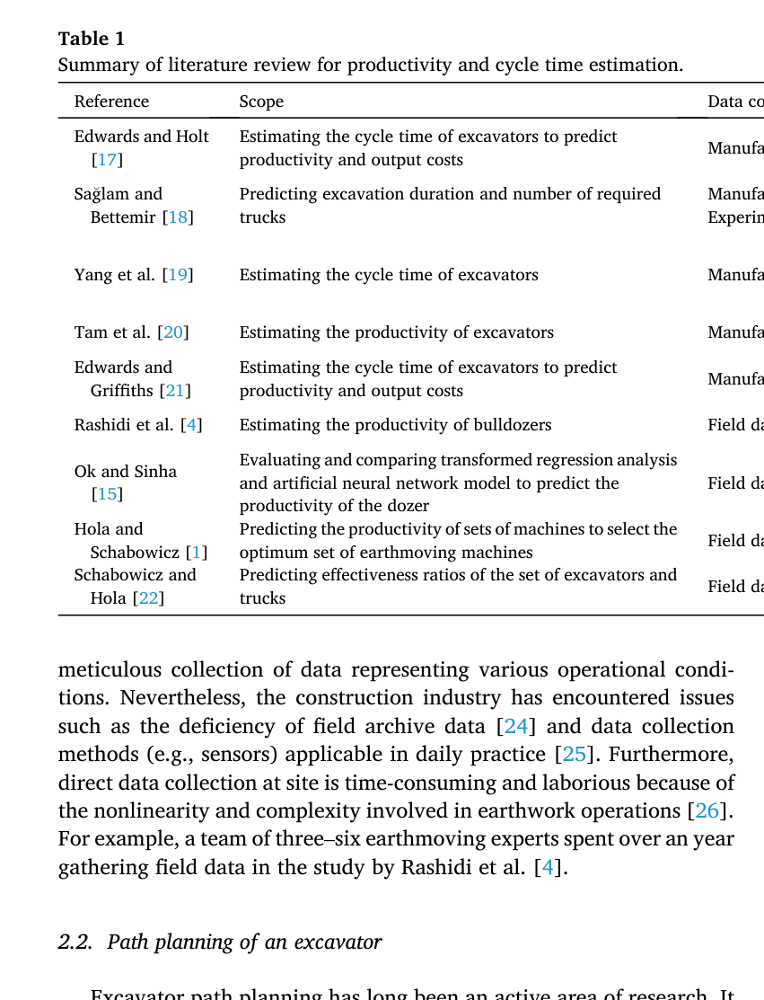
원문 Table 1 · PDF p.3 — Table 1 Summary of literature review for productivity and cycle time estimation.
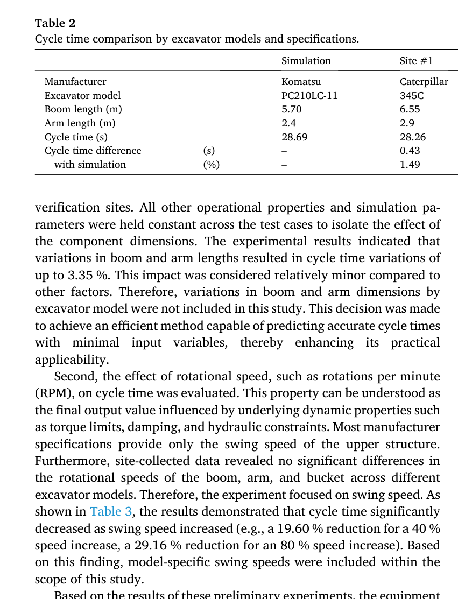
원문 Table 2 · PDF p.6 — Table 2 Cycle time comparison by excavator models and specifications.
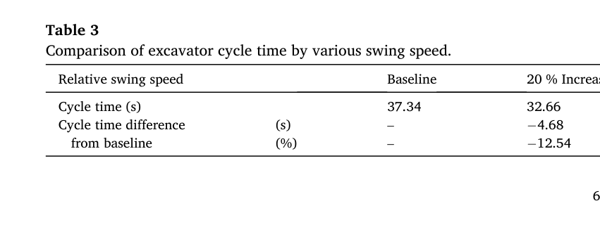
원문 Table 3 · PDF p.6 — Table 3 Comparison of excavator cycle time by various swing speed.
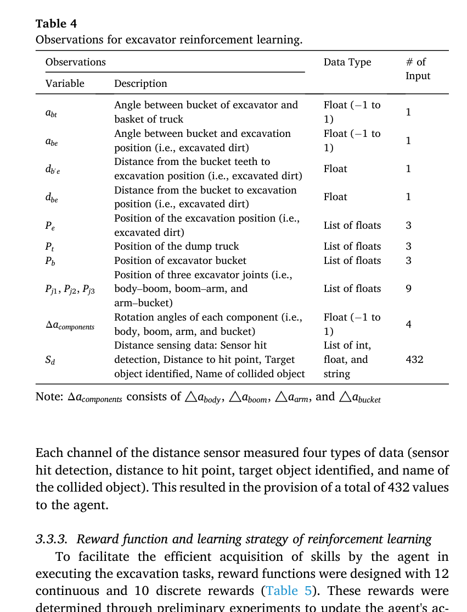
원문 Table 4 · PDF p.10 — Table 4 Observations for excavator reinforcement learning.
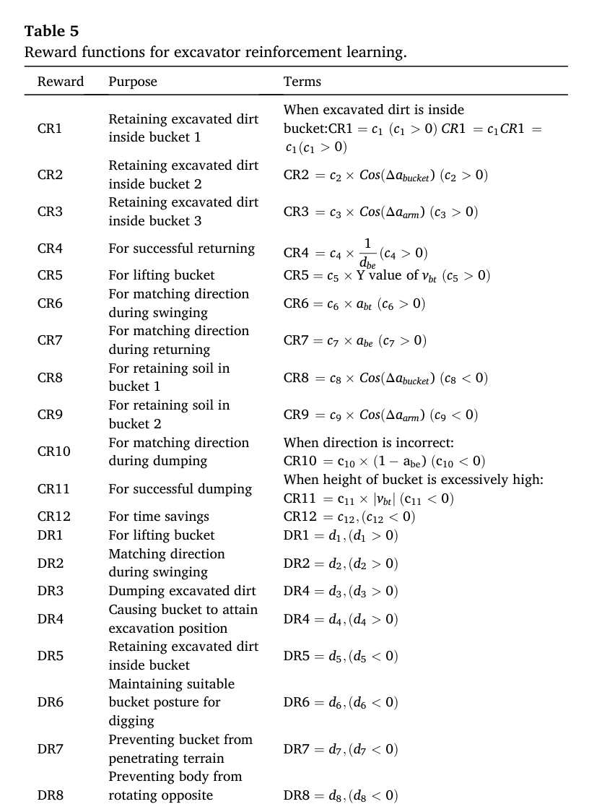
원문 Table 5 · PDF p.10 — Table 5 Reward functions for excavator reinforcement learning.
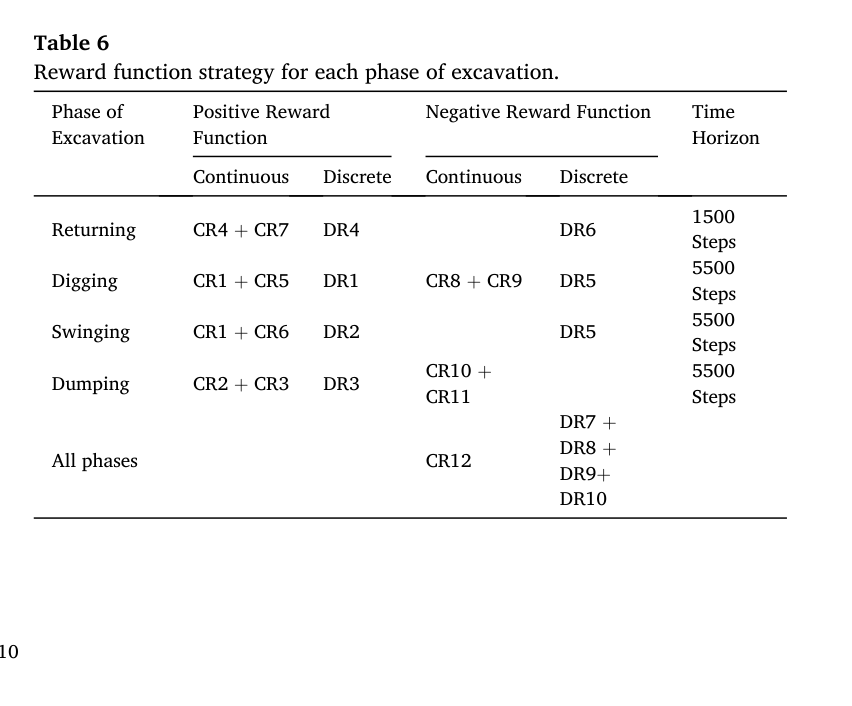
원문 Table 6 · PDF p.10 — Table 6 Reward function strategy for each phase of excavation.
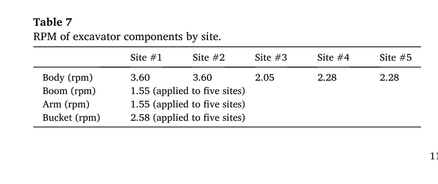
원문 Table 7 · PDF p.11 — Table 7 RPM of excavator components by site.
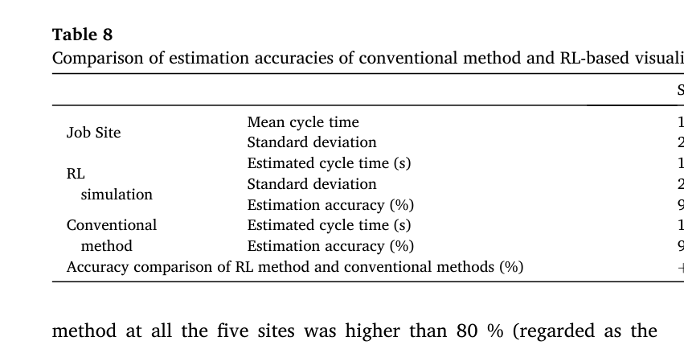
원문 Table 8 · PDF p.12 — Table 8 Comparison of estimation accuracies of conventional method and RL-based visualized simulation.
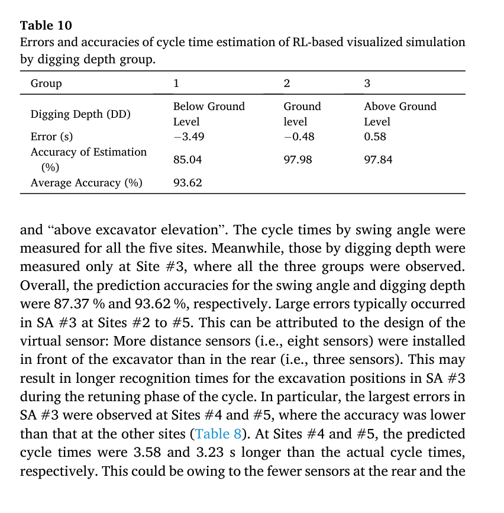
원문 Table 10 · PDF p.12 — Table 10 Errors and accuracies of cycle time estimation of RL-based visualized simulation by digging depth group.
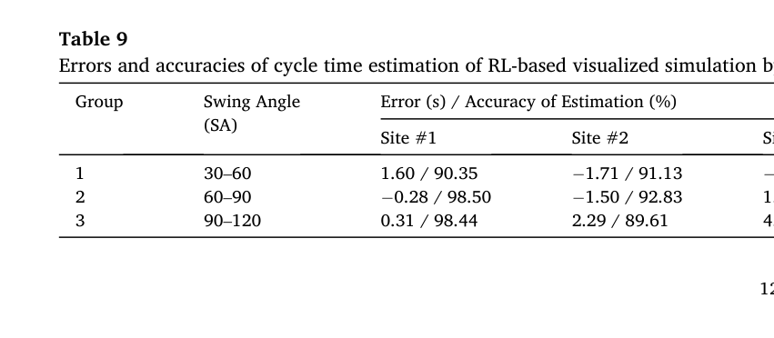
원문 Table 9 · PDF p.12 — Table 9 Errors and accuracies of cycle time estimation of RL-based visualized simulation by swing angle group.
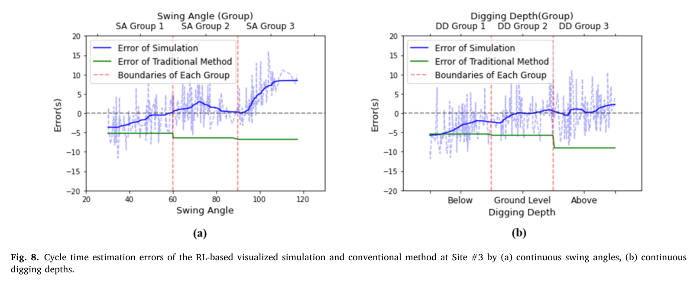
원문 Figure 8 · PDF p.13 — Fig. 8. Cycle time estimation errors of the RL-based visualized simulation and conventional method at Site #3 by (a) continuous swing angles, (b) continuous digging depths.
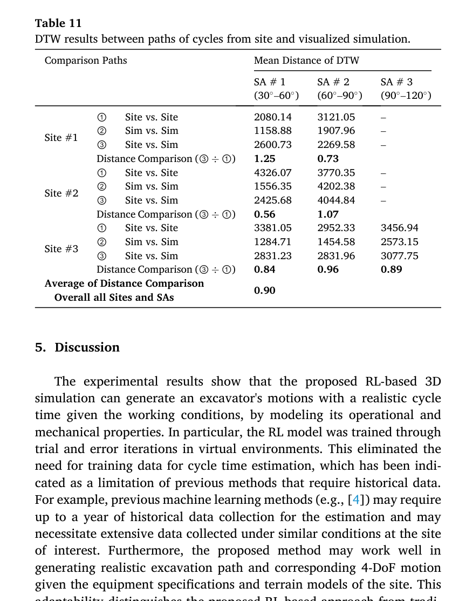
원문 Table 11 · PDF p.14 — Table 11 DTW results between paths of cycles from site and visualized simulation.
섹션별 원문 근거 페이지
배경: p.1, p.2, p.3, p.4
방법론: p.4, p.5, p.6, p.7, p.8, p.9, p.10
실험: p.7, p.8, p.9, p.10, p.11, p.12, p.13
결과: p.11, p.12, p.13, p.14, p.15
한계: p.14, p.15
원문·기존 요약·관련 자료
원문 PDFpdf
추출·교차검증 근거
2026 Reinforcement learning-driven adaptive 3D simulation and visualization of excavator operations.pdf